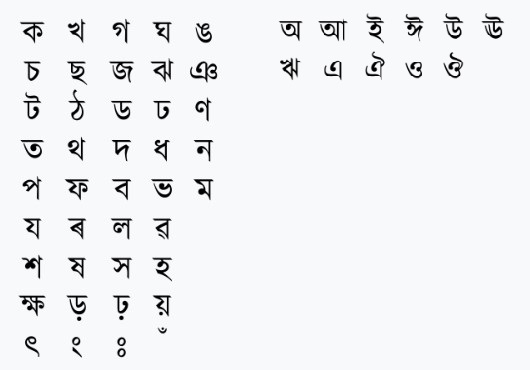
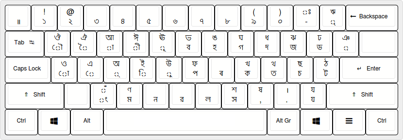

Welcome to the Assamese Language Information Page
1. Assamese Language Alphabet Set
The Assamese alphabet consists of various characters. Here are the first two alphabets for your reference:
2. Keyboard Layout of Assamese Language
Typing in Assamese requires a specific keyboard layout. Below is the standard layout used:
3. Equivalent ASCII Code
The Equivalent ASCII Code of Assamese is Bengali, Range: 0980–09FF.
4. Number Conversion System
Using the provided conversion system, we can find the equivalent ASCII code in Assamese for all digits. Here is an example:
- 1 (in mathematics) = 0031 in Unicode = 49 ASCII Code = ১ (in Assamese Bengali) = 09E7 (Encoded)
- 2 (in mathematics) = 00B2 in Unicode = 50 ASCII Code = ২ (in Assamese Bengali) = 09E8 (Encoded)
5. Assamese Unicode for 2024
The Unicode for the year 2024 in Assamese can be found as follows:
- 2024 = 09E8 09E6 09E8 09EA
For more detailed understanding and additional characters, visit the Unicode Charts.